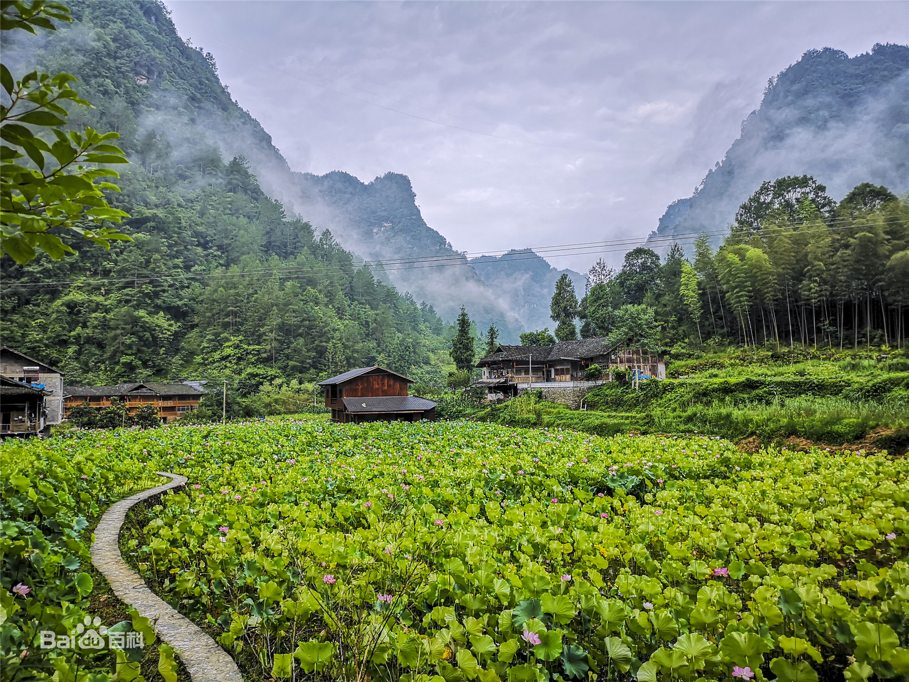

基本信息

沿板夹溪逆流而上，从后坝新街附近的学堂湾开始，至板夹溪发源地鸡公山脚的谭家院子，分布着13个原始古朴的土家山寨，土家人在此逐水而居，聚族成寨，形成具有典型代表性的土家民居群落，并成为土家族首个被批准立项建设的民族生态博物馆——武陵山民俗生态博物馆。景区面积6.5平方公里，景区内公路里程6.3公里，生活着近200户800人。杆栏式木结构吊脚楼为十三寨的主要特色，每寨居民少则十余家几十口人，多则几十家上百人，多以姓氏为寨名。
土家十三寨沿板夹溪两岸分布，或处平坝或据坡地，错落有致，形态各异。寨子布局以半包围品字形、全包围的四合院交叉组合，吊脚楼形态有全吊型、半吊型等多种样式。瓦屋顶均有花屋脊和翘角，四周设栏杆走廊，雕栏花窗。吊楼下多为猪圈、牛栏，或用来安置碓磨，堆放柴禾杂物等。这里有红豆杉、铁尖杉、香柏、紫柏、香樟、楠木、银杏等珍贵树种，也有黄猴、麂子、野猪等国家保护动物。土家十三寨保留了原始的土家吊脚楼民居，原生的生产生活方式，原味的土家民俗风情，山水风光、农耕田园、土家民居、民风民俗，构成板夹溪十三寨的旅游特色，2015年被评为“重庆十佳避暑休闲目的地”。
美景一览

资源
神奇溪水润万物。十三寨里有一条小溪叫板夹溪，溪水清澈，依山绕寨，潺潺流淌，滋润万物，两边群山耸峙，山形奇特，一座座绵延不断的青山，像神女，像情郎，像狮子……鬼斧神工。岸上田土阡陌纵横，分布在板夹溪畔，春日油菜花海，夏日稻香遍野，构成优美的田园风光。这里是天然的动植物王国，有红豆杉、香柏、紫柏、楠木、银杏等珍贵树种，还有猴、麂子、野猪等国家保护动物。